Parallelograms & Trapezoids — Practice Set
Bank code: GEO-PTZ · Section: Geometry · 30 questions — Easy 7 · Medium 16 · Hard 7
Area uses the perpendicular height, never the slant side; a trapezoid averages its two bases, and a rhombus is half the product of its diagonals.
Every question below is live in the question bank under the ID shown — the sheet and the portal are the same questions. Attempt a level with the clock running, then check Part C.
Part A — Questions
Quantitative Comparison — the four choices are always the same, so they are not reprinted: (A) Quantity A is greater · (B) Quantity B is greater · (C) The two quantities are equal · (D) The relationship cannot be determined from the information given
Level 1 · Easy — 7 questions · ~5 min
warm-up — these must be automatic
Q1 · GEO-PTZ-001 · MCQ · 40s
A parallelogram has a base of 12 and a perpendicular height of 7. What is its area?
(A) 38
(B) 42
(C) 76
(D) 84
(E) 168
Q2 · GEO-PTZ-002 · MCQ · 45s
In parallelogram ABCD, angle A = 65°. What is the measure of angle B?
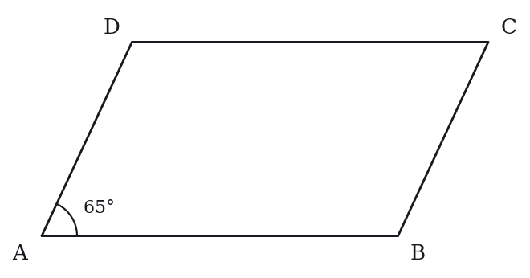
(A) 65°
(B) 115°
(C) 230°
(D) 245°
(E) 295°
Q3 · GEO-PTZ-003 · MCQ · 50s
A trapezoid has parallel bases of length 8 and 14, and a height of 6. What is its area?
(A) 48
(B) 56
(C) 66
(D) 84
(E) 132
Q4 · GEO-PTZ-004 · Numeric Entry · 45s
Parallelogram PQRS has PQ = 9 and QR = 5. What is the perimeter of the parallelogram?
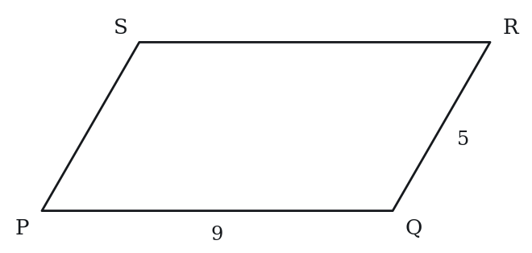
Numeric entry — write the number.
Q5 · GEO-PTZ-005 · MCQ · 50s
Which of the following statements about a rhombus is always true?
(A) All interior angles are 90°
(B) The diagonals are equal in length
(C) All four sides are equal
(D) It is a rectangle
(E) The diagonals are equal and bisect each other
Q6 · GEO-PTZ-006 · QC · 50s
A parallelogram has a base of 10 and a slant side of 8. The perpendicular height is 6.
Quantity A: Area of the parallelogram Quantity B: 80
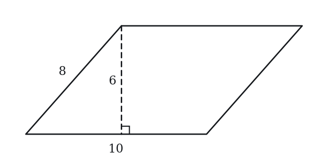
Q7 · GEO-PTZ-009 · Numeric Entry · 45s
A rhombus has diagonals of length 10 and 24. What is the area of the rhombus?
Numeric entry — write the number.
Level 2 · Medium — 16 questions · ~22 min
two or three steps, one planted trap each
Q8 · GEO-PTZ-011 · MCQ · 70s
In a parallelogram, one side has length 15 and an adjacent side has length 10. The two sides meet at an angle of 30°. What is the area of the parallelogram?
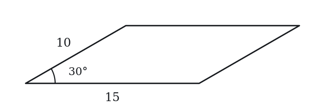
(A) 50
(B) 75
(C) 100
(D) 129.9
(E) 150
Q9 · GEO-PTZ-012 · Numeric Entry · 75s
A trapezoid has an area of 90, one base of length 12, and a height of 9. What is the length of the other base?
Numeric entry — write the number.
Q10 · GEO-PTZ-014 · MCQ · 75s
In parallelogram ABCD, angle A = 3x + 10 and angle B = 5x − 30. What is the value of x?
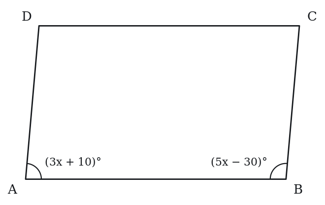
(A) 17.5
(B) 20
(C) 22.5
(D) 25
(E) 30
Q11 · GEO-PTZ-015 · Select all that apply · 80s
A rhombus has all sides of length 13. Which of the following statements must be true? Select all that apply.
(A) The diagonals bisect each other
(B) All interior angles are equal
(C) The diagonals are perpendicular to each other
(D) The perimeter is 52
(E) The diagonals are equal in length
Q12 · GEO-PTZ-016 · MCQ · 80s
A rhombus has diagonals of length 16 and 12. What is the side length of the rhombus?
(A) 8
(B) 10
(C) 14
(D) 20
(E) 28
Q13 · GEO-PTZ-018 · Numeric Entry · 85s
An isosceles trapezoid has parallel bases of 6 and 18, and legs (non-parallel sides) of length 10. What is the height of the trapezoid?
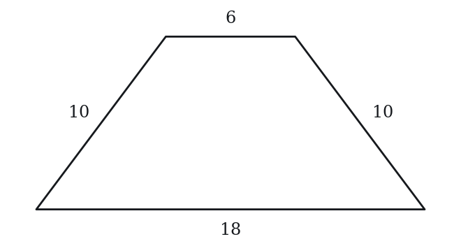
Numeric entry — write the number.
Q14 · GEO-PTZ-020 · QC · 70s
A parallelogram has base b and perpendicular height h (b > 0, h > 0). A trapezoid has parallel bases b and 3b, and the same height h.
Quantity A: Area of the parallelogram Quantity B: Area of the trapezoid
Q15 · GEO-PTZ-021 · MCQ · 70s
Trapezoid ABCD has AB ∥ CD, AB = 10, height = 8, and area = 60. What is the length of CD?
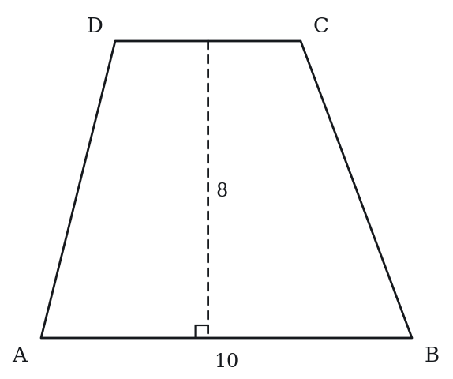
(A) 3
(B) 5
(C) 7
(D) 10
(E) 15
Q16 · GEO-PTZ-023 · Numeric Entry · 90s
A rhombus has a perimeter of 40 and one diagonal of length 12. What is the area of the rhombus?
Numeric entry — write the number.
Q17 · GEO-PTZ-026 · Select all that apply · 75s
In which of the following quadrilaterals do the diagonals always bisect each other? Select all that apply.
(A) Parallelogram
(B) Trapezoid (one pair of parallel sides only)
(C) Rhombus
(D) Rectangle
(E) General quadrilateral with no parallel sides
Q18 · GEO-PTZ-032 · QC · 90s
Parallelogram ABCD has angle A = 50°.
Quantity A: Angle B + Angle D Quantity B: 260°
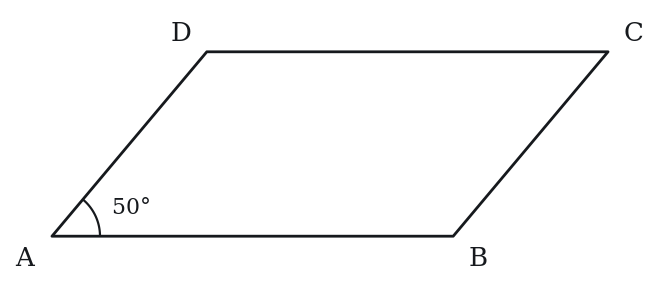
Q19 · GEO-PTZ-034 · MCQ · 95s
Rhombus ABCD has side length 5 and one diagonal AC of length 6. What is the area of the rhombus?
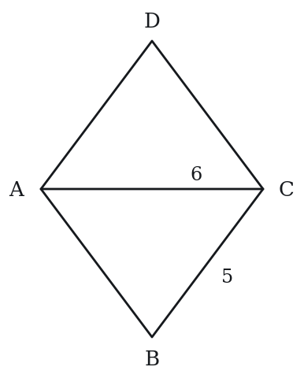
(A) 12
(B) 20
(C) 24
(D) 30
(E) 48
Q20 · GEO-PTZ-035 · QC · 100s
Trapezoid T has parallel bases of 5 and 11 and height 4. Parallelogram P has the same height and a base equal to the midsegment of the trapezoid.
Quantity A: Area of trapezoid T Quantity B: Area of parallelogram P
Q21 · GEO-PTZ-038 · Numeric Entry · 125s
Parallelogram ABCD has AB = 12, BC = 5, and diagonal AC = 13. What is the area of the parallelogram?
Numeric entry — write the number.
Q22 · GEO-PTZ-KMF-003 · QC · 80s
In quadrilateral WXYZ, side ZY is parallel to side WX, angle XWZ is a right angle, WX = 9, ZY = 4 and WZ = 12.
Quantity A: The length of XY Quantity B: 13
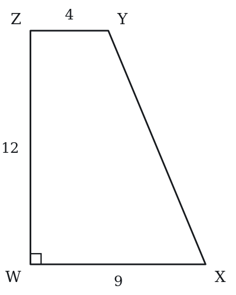
Q23 · GEO-PTZ-KMF-004 · MCQ · 90s
A square and a rhombus each have sides of length 6, and the rhombus has an angle of 60 degrees. By how much does the area of the square exceed the area of the rhombus?
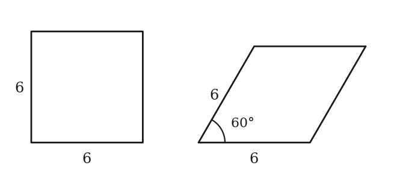
(A) 36 - 18sqrt(3)
(B) 36 - 18sqrt(2)
(C) 18
(D) 36 - 9sqrt(3)
(E) 18sqrt(3)
Level 3 · Hard — 7 questions · ~14 min
where 162+ is won or lost
Q24 · GEO-PTZ-028 · Numeric Entry · 100s
Trapezoid ABCD has AB ∥ CD with AB = 20 and CD = 8. The diagonals intersect at point P. What is the ratio of the area of triangle APB to the area of triangle CPD?
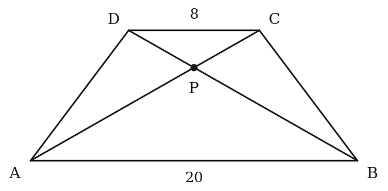
Numeric entry — write the number.
Q25 · GEO-PTZ-029 · QC · 110s
Rhombus R has side length 10. Parallelogram P has base 10 and perpendicular height 10.
Quantity A: Area of Rhombus R Quantity B: Area of Parallelogram P
Q26 · GEO-PTZ-037 · MCQ · 105s
An isosceles trapezoid has parallel sides of lengths 10 and 22, and its area is 128. What is the perimeter of the trapezoid?
(A) 44
(B) 48
(C) 52
(D) 60
(E) 64
Q27 · GEO-PTZ-040 · Select all that apply · 130s
A parallelogram has integer side lengths and integer area. Its perimeter is 40. Which of the following values could be the area of this parallelogram? Select all that apply.
(A) 19
(B) 75
(C) 96
(D) 100
(E) 110
Q28 · SEC-PG-015 · MCQ · 125s
The parallel sides of trapezoid WXYZ have lengths XY = 5 and WZ = 13, and the nonparallel sides have lengths WX = 7 and YZ = 9, as shown above. Segment PQ (not shown) is parallel to the two parallel sides, with P on side WX and Q on side YZ. If PQ divides WXYZ into two trapezoids having equal perimeters, what is WP + QZ?
Note: Figure not drawn to scale.
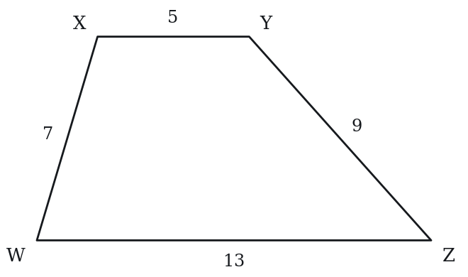
(A) 2
(B) 3
(C) 4
(D) 5
(E) 6
Q29 · SEC-PG-042 · QC · 115s
In quadrilateral KLMN above, side LM is parallel to side KN, LM is shorter than KN, and angle K is a right angle.
Note: Figure not drawn to scale.
Quantity A: The length of KL Quantity B: The length of MN
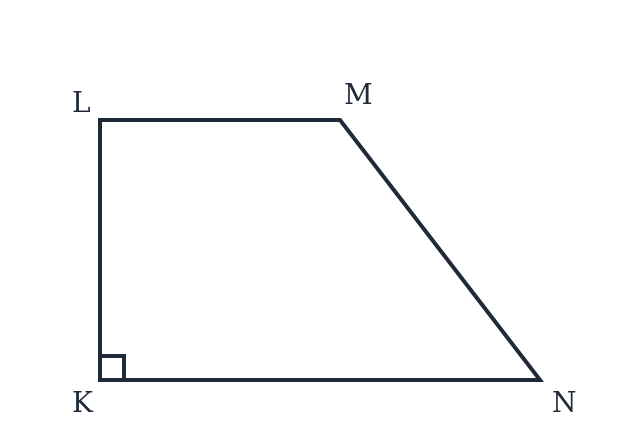
Q30 · SEC-PG-048 · Select all that apply · 130s
Square WXYZ and parallelogram WPQZ lie in the same plane and share the side WZ. Also, WP = WX, points P and X lie on the same side of line WZ, and P is not the same point as X. Which of the following must be true?
Indicate all such statements.
(A) The area of WXYZ is greater than the area of WPQZ
(B) The perimeter of WXYZ is equal to the perimeter of WPQZ
(C) PQ = XY
(D) The area of WPQZ is greater than half the area of WXYZ
(E) The area of WXYZ is more than twice the area of WPQZ
F. WQ = WY
The rest of this sheet is part of Pro
All 30 questions, the answer key and full worked solutions with every trap named — plus 75 concept notes and 5,868 questions.